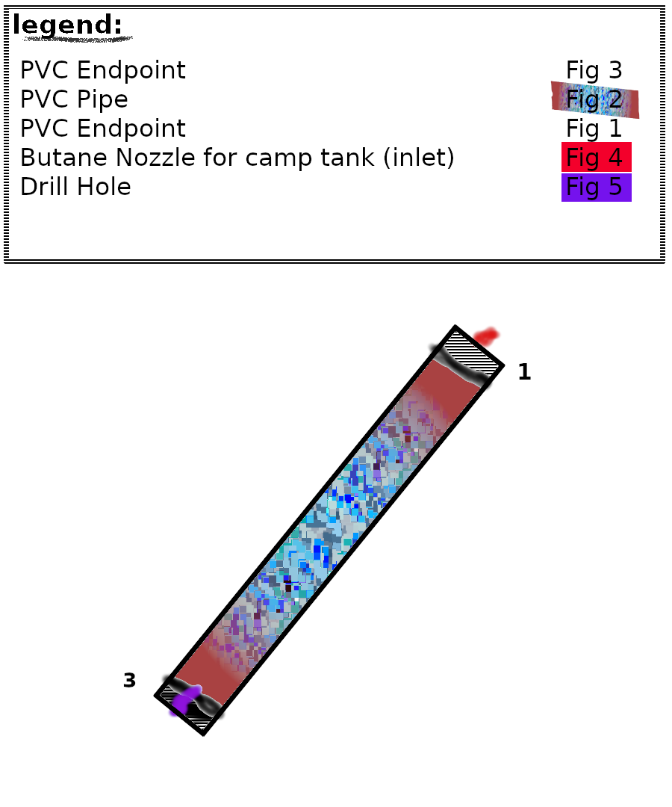
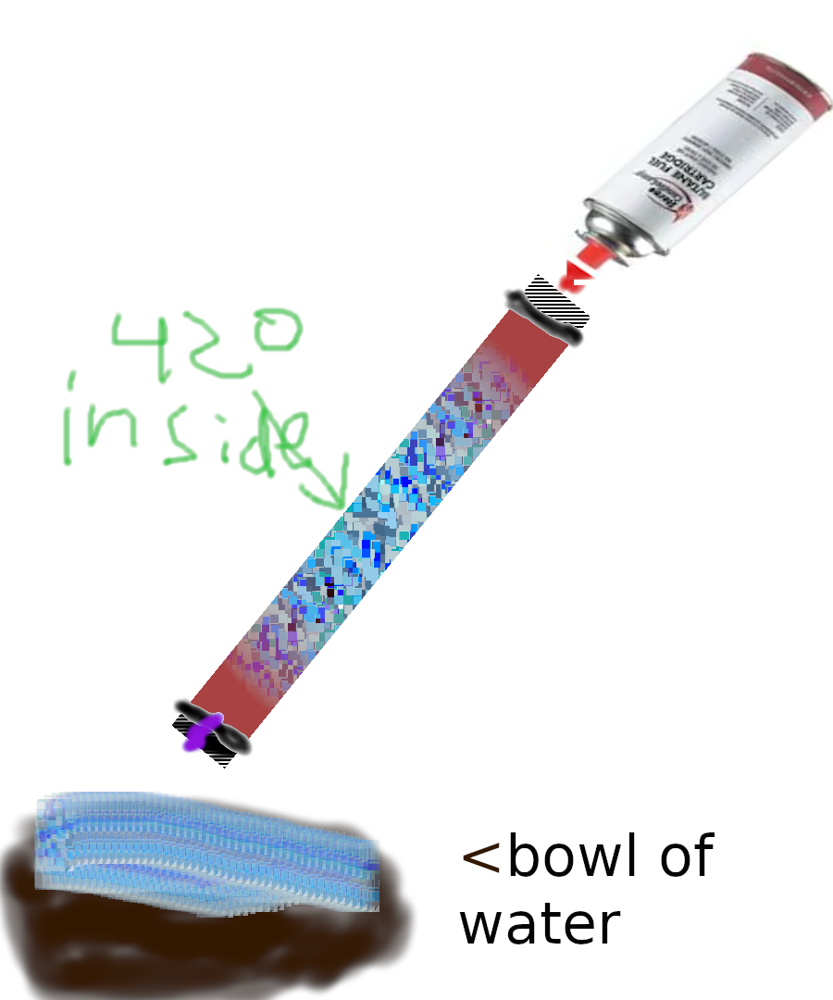

BHO Extractor Tube
This is just going on what I've seen, and can best put back together in my head
Apparatus Design

apparatus use

Now, im sure you've put this together with some kind of fittings to keep the nozzle in place.
To use: Fill the tube with 420 (clippings works too), then put the fittings back on the ends. IN A WELL VENTILATED AREA WITH NO FIRE:
hOLD tube over a bowl of water (yes) and you will see yellow goo shoot out the bottom of the tube the more butane you shoot into the tube.
note: obviously extremely dangerous as butane is flammable and may be known to cause a hallucination.
when done: use a stiick or remove the water somehow so you have only goo left, however you want to separate it from the water.
DO NOT PUT ON WAX PAPER YOU WILL NEVER GET IT OFF.